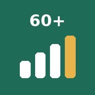

Instala Fuerte 60
Rutina de hoy
Frecuencia antes que intensidad: bloques cortos repartidos en el día rinden más que una hora tres veces por semana.
El primer mes
Querer cambiarlo todo a la vez lleva al agobio y al abandono. Durante cuatro semanas, solo esto:
Evalúa dónde estás, sin juzgarte
Es tu foto de partida para compararla dentro de 6 meses.
Elige tu primera batalla
Una sola clave para este mes.
Tercer paso
La grabación termina antes de que lo diga.
Tu autoevaluación
Tu primera batalla
Proteína diaria
De 1,2 a 1,6 g por kilo de peso al día, repartidos en 3 o 4 comidas de 20 a 30 g.
Fuentes económicas
Huevos, atún en lata, lentejas con arroz, yogur griego y muslos de pollo. Referencia aproximada (no del vídeo): un huevo, unos 6 g; una lata pequeña de atún, unos 20 g; un yogur griego natural de 125 g, entre 8 y 12 g según la marca.
Ojo: con enfermedad renal, pregunta a tu médico antes de subir la proteína.
Los 10 pilares
Se apoyan unos en otros. Abre cada uno, marca lo que ya has incorporado y escucha de nuevo esa parte desde el minuto indicado.
Sobre la app
De dónde sale
Resumen práctico del vídeo «Estas únicas 10 claves te mantienen fuerte y feliz después de los 60» (canal Mente Despierta, 53 min).
Abrir el vídeoAntes de seguir las pautas. El vídeo usa el nombre de Mario Alonso Puig, pero no es seguro que sea suyo, y algunas cifras se dan sin fuente. Con enfermedad renal, osteoporosis avanzada, problemas cardiacos o medicación crónica, consulta con tu médico antes de subir la proteína, el impacto o los suplementos.
Tus datos
Se guardan solo en este móvil. Si lo cambias o borras los datos del navegador, se pierden: haz una copia de vez en cuando.